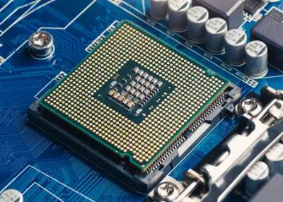
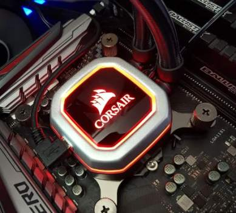

Computer Hardware Website


What is a CPU?
The CPU is one of the component that defines a computing device, and while it is of critical importance, the CPU can only funtion alongside other hardware. the silicon chip sits in a special socket located on the main board (motherboard or mainboard) inside the device. it is separate from the memory, which is where information is temprarily sorted. it is also from seprate from the graphics card or graphics chip, which renders the video amd 3D grapgics that are displayed on your screen.
CPUs are made by arranging billions of microscopic transistors onto single computer chip. thwew transistors enable the CPU to perform the computations necessary for executing programs stored in your system's memory. functioning as tiny swiches, they alternate between on and off states, conveying the binary ones and zeros that underile all your actions on the device, whether its watching videos or composinf an email.

What does a CPU actually do?
At its core, a CPU takes instructions from a program or application and performs a calculation. this provess breaks down into three stages: fetch, decode and execute. A CPU fetch the instruction from RAM, decodes what the instruction acctally is, and then executes the instruction using relevent parts of the CPU.
The executed instruction, or calculation, can involve basic arithmetic, comparing numbers, performing a function, or moving numbers arounf in memory.Since everthing in a computing device is represented by numbers, you can think of the CPU as a calculator that runs incredibly fast. the resulting workload might start up Windows, diplay a YouTube video, or calculate compound interest ona spreadsheet.

CPU Technologies
Today's modern CPU consist of multiple cores that allow it ro perform multiple instruction at once, effectively cramming several CPUs on a single chip. Entry-level processors today have between rwo and four cores, while six to eight cores is more mainstream in gaming devices and PCs. High-end models can have anywhere up to 32 cores, and perfessional hareware can go beyond that.
Many processors also employ a technology called simltaneous multithreading. Imagine a single physical CPU core that can perform two lines of execution (threads) at once, thereby appearing as two "logical" cores on the opreating system end.These virtual cores are not as powerfull as physical cores because they share the same resources, but overall, they can help improve the CPU's multitasking performance when running compatible software.
Clock speed is prominently adverised when you are looking at CPUs. this is the "gigahertz" (GHz) figure that effectively denotes how many instructions a CPU can handle per second, but that is not the whole picture regarding performance. Clock speed mostly comes intp play when comparing CPUs from the same product family or generation. When all eals is the same, a faster clock speed means a faster processor.However, a 3GHz processor from 2010 will deliver less work than 2GHz processor from 2020,due to the newer model's more advanced underlying silicon.